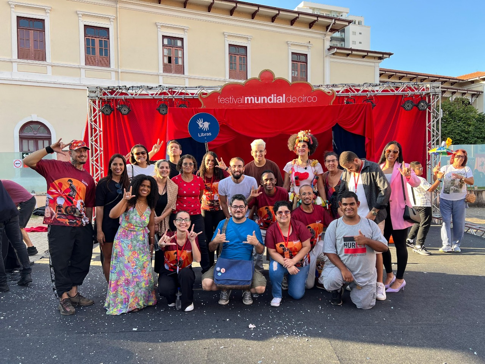

Uai Libras marca presença no maior festival de circo do mundo!
A magia do circo acessível em Libras e audiodescrição!
A Uai Libras participou do Festival Mundial do Circo, o maior evento circense do mundo, levando acessibilidade e inclusão para o centro das atenções. Representando a comunidade surda com orgulho, nossa equipe promoveu ações em Libras (Língua Brasileira de Sinais) durante as apresentações e interações com o público.
Com intérpretes, audiodescritores e oficinas acessíveis, conseguimos tornar a experiência do circo ainda mais mágica para as pessoas surdas e cegas. A iniciativa reforça o nosso compromisso em garantir o direito à cultura, à informação e ao entretenimento para todos, sem barreiras.
Levar acessibilidade a um evento internacional como esse é um passo importante na luta por mais visibilidade, respeito e inclusão. A Uai Libras segue firme na missão de ampliar o acesso à comunicação e transformar realidades com empatia e representatividade.